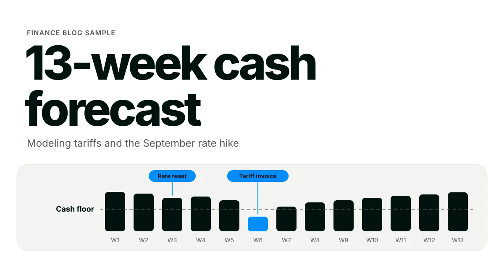

How to Build a 13-Week Cash Flow Forecast That Models Tariffs
Tariffs and the September rate hike reach your bank balance weeks before they reach your margins. This post is a founder's build of the forecast that catches them.

Your 13-week cash flow forecast probably assumes your costs held still in 2026, and two of them didn't. Tariff rates kept shifting between the day you issued a purchase order and the day the goods cleared customs. And on September 16, 2026, the Federal Reserve raised its target range for the first time since July 2023, to 3.75% to 4%.
If your forecast still carries spring's landed costs and spring's interest line, your lowest cash week sits lower than the spreadsheet shows. Many small businesses can't absorb that kind of surprise for long. The JPMorgan Chase Institute found that the median small business held 27 days of cash outflows in reserve, and a quarter held fewer than 13. (The study used 2015 bank data, and it's still the most-cited baseline.)
The median is under 4 weeks of cash, which is why the 13-week view matters. You can fix it by adding a few lines to the forecast you already have. You need duty-adjusted landed cost on the dates you actually pay, a floating rate on any variable debt, and a downside case built around a specific tariff or rate move. It's the same cash forecast a buyer-ready finance function runs, and it's where our FP&A and CFO advisory work starts before stretching the view past a year. Below is the build step by step, with a worked tariff example and the triggers that tell you when to act.
Why your margins and your cash disagree
Profit and cash run on different clocks. A growing business can be profitable and still run short, because slow collections, inventory buildup, up-front project costs and rising debt service all pull cash out before any of it shows on the income statement. Your monthly P&L (profit and loss statement) averages those timing gaps away, so a business that's profitable for the month can still come up short on the one Friday payroll clears.
Tariffs widen that gap, starting with timing. Duty is generally charged at the rate in effect when your goods are entered at customs, which may differ from the rate on the day you placed the order. So a landed cost you approved at the purchase order stage may not match the invoice you end up paying. Landed cost is everything it takes to get product onto your shelf: the price, shipping, insurance, customs duties, taxes and handling fees. The duty line is the one that moves, and duties can stack (a base tariff, Section 301 surcharges, anti-dumping duties and countervailing duties can all land on the same shipment).
Accounting then hides the damage. If you value inventory on FIFO (first in, first out), your cost of goods sold lags the landed cost you're paying today. Your margins can look healthy for a quarter while the higher duties have already left your bank account, and they compress later, when the expensive inventory finally flows through. Ted Curd, CFO of Centime, put the result plainly in a piece on tariffs and AP in April 2026:
"And your 13 week cash forecast is wrong because nobody modeled the tariff increase that hit three weeks ago."
A budget won't catch this either. It sets expectations for the year, and it can't tell you which week cash gets tight or how long you have to respond. That's the job of a credible forecast behind the budget, and for cash, the most useful forecast is the 13-week one.
What a 13-week cash flow forecast is
A 13-week cash flow forecast projects your cash receipts and cash payments week by week for one quarter, or 91 days. It uses the direct method, which means it tracks actual money in and money out instead of starting from net income and adjusting backward. The goal is enough visibility to spot pressure while you still have time to do something about it, and rough numbers on the right dates get you there.
The horizon matters because of how thin most cash cushions are. The JPMorgan Chase Institute's study behind those figures covered 597,000 small businesses. It measured "cash buffer days," the number of days a business could keep paying its bills from its balance if every inflow stopped. Work out your own buffer days and compare them with the 27-day median. A 13-week window covers more than 3 times that median cushion, which is roughly the distance you need to see a problem coming and still have options.
How to build a 13-week cash flow forecast, step by step
Step 1: Start with the cash in the bank
Open with today's available cash across every operating account, net of checks you've written that haven't cleared. Skip accounting income here. The bank balance is the money you can actually spend this week.
Step 2: Lay out 13 weekly columns on the real calendar
Tie each column to an actual week. That way a month with an extra payroll run, or a quarter-end tax payment, shows up in the week it hits instead of getting smoothed into a monthly average.
Step 3: Forecast receipts by when customers really pay
Base them on each customer's payment history from your accounts receivable aging, which is often slower than the terms on the invoice. If a customer on net 30 has paid in 52 days for a year, the forecast should say 52.
Step 4: Put every disbursement on its real date
Payroll, payroll taxes and benefits all go in the week the money leaves. So do vendor and subcontractor payments, rent, insurance, taxes, capital spending and owner distributions. Approved vendor invoices should drop into the forecast on their scheduled payment dates.
Step 5: Give debt service its own line
Keep principal and interest on a separate row. You'll want to see it, and so will any lender reading the forecast. It's also where the September rate change shows up.
Step 6: Find your lowest week and set a cash floor
Calculate an ending balance for every week, pick a minimum cash floor, and mark any week that falls below it. The lowest week is the number that matters. The closing balance in week 13 can look fine while week 6 bounces payroll.
Add a "watchouts" column too, naming the least certain assumption in each week, so the soft numbers stay visible.
Add the tariff lines
Three changes turn a standard 13-week forecast into one that holds up under tariffs.
Recalculate landed cost when goods arrive. Re-run landed cost at goods receipt using the duty rates that actually applied, and push the difference into the week you'll pay it. Centime walks through an example: a $42,000 purchase order carried an estimated landed cost of $51,200. A tariff increase hit mid-shipment, and the invoice came in at $55,800. That's $4,600 more than planned, about 9% over the estimate, on a single order. Multiply that across every open PO and you can see how fast the lowest week moves.
Forecast duties and broker fees as their own lines. These charges often arrive separately, with no matching line on the purchase order. If your forecast only knows about vendor invoices, it will miss them. Give them their own rows and date them on the clearance schedule.
Size the exposure by category. Centime's estimate is that a 10% tariff increase on a key material category can move weekly cash needs by tens of thousands of dollars. Your figure depends on your import mix, so build it from your own top categories: what you import, from where, and what each shipment cost in duty last time.
If your inventory runs on standard cost, expect your purchase price variance reports to get noisy while tariffs keep moving. That's one more reason to read the cash forecast alongside the P&L instead of trusting margins alone. (Which inventory method suits your business is a question for your accountant.)
Add the rate line
The Fed held its target range at 3.5% to 3.75% at every meeting from January through July 2026, which made it easy to treat interest as a fixed cost. Then on September 16, 2026, it raised the range a quarter point to 3.75% to 4%. At the October 28 meeting it held there, but 2 voters dissented because they wanted another quarter point. We covered what the hike means for selling your business in 2027; for your cash forecast, the question is narrower.
If you carry a line of credit or term loan that floats, your interest payment changed in September. Update the debt service row to the current rate, then put a further quarter point in the downside case. For many owner-led businesses the dollar amount is modest (a quarter point on $1M of floating debt is $2,500 a year). The bigger risk usually sits in the covenants and the borrowing base, because a higher interest bill eats the headroom you have on a coverage ratio. Watch that headroom as a line of its own.
Build three scenarios around specific events
Run three versions of the forecast, each tied to something you can name.
- Base case: your most supportable current expectation.
- Downside case: credible pressure tied to specific events, such as a named tariff increase on your largest import category, collections slipping 2 weeks, or another quarter-point rate move. Avoid a uniform 10% haircut across every line; it hides which assumption hurts you.
- Action case: the specific moves you'd make if the downside arrives, laid out in the forecast so you can see whether they work. For tariffs, that can mean pre-buying ahead of an announced increase, shifting volume to a supplier in a lower-duty country, reviewing your product classifications with a customs broker, or negotiating longer payment terms.
If you want a longer view to set these against, the scenarios should tie back to your 2027 budget plan, so the quarter and the year tell the same story.
Set your triggers before you need them
Pick a small number of measurable triggers in advance, and give each one an owner and a response deadline. Good candidates include minimum unrestricted cash, availability on your borrowing base, days sales outstanding (how long customers take to pay you), weekly collections, gross margin on your backlog, and covenant headroom.
Decide what you'll do at each threshold while things are calm, so a bad week turns into a checklist item. If cash in week 5 drops under the floor, you already know whether you're delaying a distribution, drawing on the line or calling your three slowest payers.
Update the 13-week cash flow forecast every week
The forecast goes stale fast. Each week, drop the oldest column, add a new week 13, and compare what actually came in and went out with what you forecast. Explain any large or recurring variance. Those gaps usually expose something specific: billing that goes out late, collection assumptions that were too hopeful, unrecorded commitments, or operational reporting that arrives too slowly to use.
Five questions keep the weekly review honest:
- When does cash hit its low point in the base case?
- Which three assumptions create the most downside exposure?
- What would you do if collections slipped 2 weeks?
- Do planned distributions and capital spending still hold up in the downside case?
- Can you explain last week's largest variance?
What a lender or buyer reads in it
Most lenders reading your forecast look at the lowest weekly ending balance before the closing one. They check whether debt service has its own line, whether receipts reflect how your customers really pay, whether the model is current, and whether you track how far off last week's forecast was.
Buyers read the same signals. A forecast built on operational drivers, with variances you can explain, is one of the things that separates functional financials from buyer-ready ones. A monthly best guess is one of the 3 signs a fractional CFO engagement has plateaued. As Lance Geda puts it in that piece:
"Getting organized is a strong start, but it's not the finish line."
A tariff-aware 13-week forecast is part of what buyers look for in your financials, because it shows you can spot a cash shortfall weeks before it reaches your bank account.
You can start this week. Pull your last three tariff-affected invoices, compare each one with the landed cost your forecast assumed, and put the difference in the week you'll pay it. Then update the debt service row to the rate you're paying now, and check whether your lowest week moved.